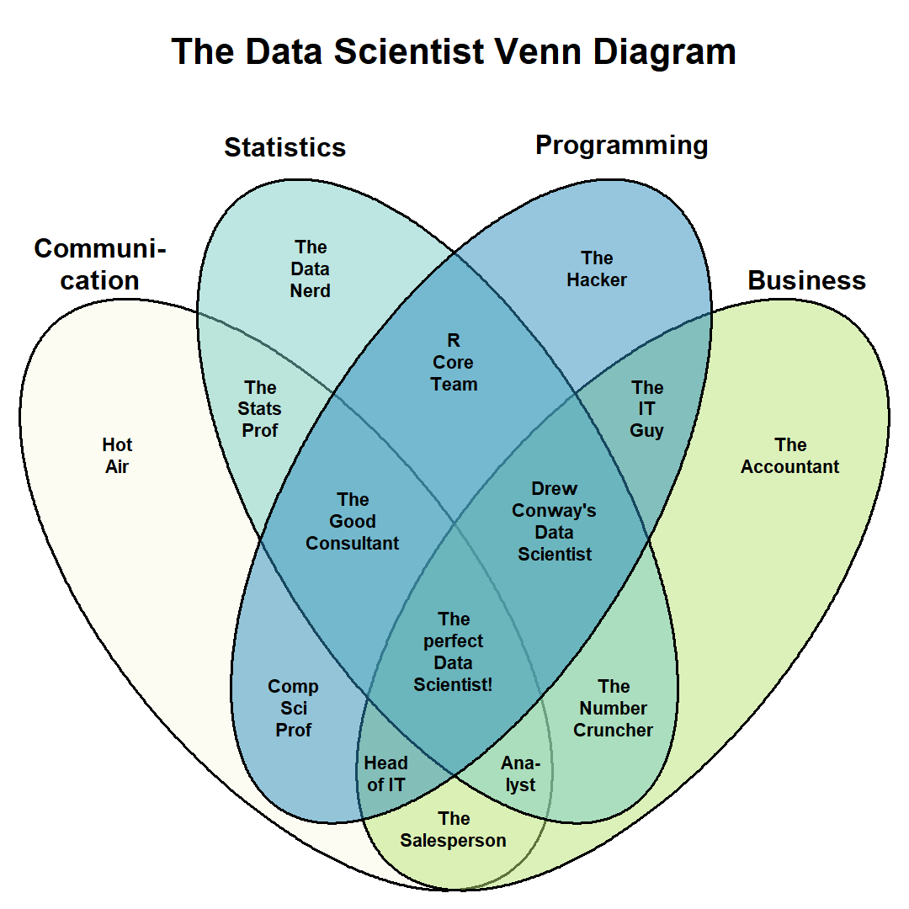
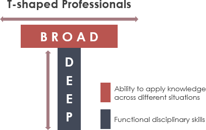

Data Hackathons: Jumpstarting Your Test Organization’s Digital Transformation
DISTRIBUTION STATEMENT A. Approved for public release: distribution unlimited. 96TW-2022-0053
1 Abstract
The United States Department of the Air Force’s (DAF’s) Air Force Test Center (AFTC) completed its third iteration of the AFTC Data Hackathon in August of 2022. “Hackathons” are low risk, high return investments that can jumpstart your test organization’s digital transformation. Hackathons for software engineering have existed for more than two decades in the disciplines of cryptography, web development, and apps. With the advent of data science, big data, machine learning, and artificial intelligence, “Data Hackathons” bring the hackathon model to these data-centric disciplines. A Data Hackathon allows your organization to: explore data infrastructure options, expose “data hackers” to your organization’s test and management data, evolve third-party and in-house scripts and apps to solve real-world problems, and expand awareness of the state of the art digital technologies within your organization. The future of test will require ever increasing data volume, variety, and velocity. The pace of improvement in tools and techniques will continue to accelerate. Data Hackathons can focus your test teams and provide momentum for your organization’s digital transformation.
2 Acronyms, Abbreviations, Symbols
| AFTC | Air Force Test Center |
| AWS | Amazon Web Services |
| CDAO | Chief Data and Artificial Intelligence Office |
| DAF | United States Department of the Air Force |
| DoD | Department of Defense |
| EC2 | Elastic Compute Cloud |
| GFE | Government Furnished Equipment |
| S3 | Simple Storage Service |
| USAF | United States Air Force |
3 Disclaimer
Any mention of specific vendors, platforms, or tools is factual history of their use, and in no way an endorsement by the authors, the Department of the Air Force, the United States Government, or a sponsorship of the vendors, platforms, or tools themselves.
4 Introduction
The United States Department of the Air Force’s (DAF’s) Air Force Test Center (AFTC) completed its third iteration of the AFTC Data Hackathon in August of 2022 (“Data Hackathon” n.d.; Cloys 2022). “Hackathons” are low risk, high return investments that can jumpstart your test organization’s digital transformation. Hackathons for software engineering have existed for more than two decades in the disciplines of cryptography, web development, and apps (“Hackathon:Etymology” 2022). With the advent of data science, big data, machine learning, and artificial intelligence, “Data Hackathons” bring the hackathon model to these data-centric disciplines.
The objectives of the AFTC Data Hackathon, in particular are:
- Solve real AFTC data problems
- Discover and develop AFTC organic data talent
- Drive progress in availability and AFTC use of contemporary data technologies
Your organization may have different specific objectives, and the objectives may vary from event to event.
This paper will explain the benefits of implementing a Data Hackathon in your flight test organization. These benefits largely transcend the specific event objectives. For each benefit, the approach of the AFTC Data Hackathon will be summarized. In addition, a framework for planning, provisioning, executing, and following up on a Data Hackathon is provided, which can then be modified as required to meet the opportunities and constraints of your organization.
5 Benefits
A Data Hackathon allows your organization to:
- explore data infrastructure options,
- expose “data hackers” to your organization’s test and management data,
- evolve third-party and in-house scripts and apps to solve real-world problems, and
- expand awareness of the state of the art digital technologies within your organization.
5.1 Explore
Explore data infrastructure options. Data infrastructure is a prerequisite for working with data. Monica Rogati, among others, made a comparison with Maslow’s hierarchy of needs (Maslow 1943) and created “The Data Science Hierarchy of Needs” (Rogati 2017), depicted as a triangle or pyramid, Figure 1. Collection, movement, and storage are at the base of the pyramid. This representation is chronological, following the flow of data from source to working location, followed by techniques to explore, understand, and organize, before generating algorithms and models for inference, prediction, and influencing decisions.

The exact sequence, though, is not essential for the bottom two layers. The basic components of infrastructure are:
- Store (sometimes called “data at rest”)
- Compute
- Transport (sometimes called “data in motion”)
A Data Hackathon directly stresses all three components, by design. Your organization may have been considering adding or modifying aspects of each infrastructure component. The hackathon is an opportunity to put these updates in action and uncover pain points that would remain invisible without direct application of focused effort. The hacker teams may use the components in ways that were not anticipated by the originators, as well.
AFTC Data Hackathon Infrastructure
The AFTC Data Hackathon made use of infrastructure already existing and available to DAF members, but which may not be used to their full potential. To date, the primary platforms used, in chronological order:
- DAF CDAO “VAULT” providing access to:
- Amazon Web Services (AWS) Elastic Compute Cloud (EC2) compute and Simple Storage Service (S3) store in the cloud
- Databricks notebooks running Python and R orchestrated with Apache Spark
- Hue SQL assistant
- Apache Zeppelin notebooks running Python orchestrated with Apache Spark
- Plotly Dash dashboard front ends with Python visualizations
- Microsoft 365 including:
- Microsoft Azure compute and store in the cloud
- Excel
- Teams
- SharePoint
- Power Automate
- Power Apps
- Power BI
- DAF CDAO “Envision” providing access to:
- AWS EC2 and S3
- Palantir Foundry
- Python and R scripting
- Data Application Programming Interfaces
To the maximum extent, the hacker teams used government-furnished equipment (GFE), including computers, network connections, and virtual private networks, to ensure any outcomes of the event could be implemented within the significant constraints of the DAF network environment.
5.2 Expose
Expose “data hackers” to your organization’s test and management data. Data silos, also known as information silos, are widely acknowledged as detrimental to organizational health, as evidenced by a quick web search for "data silos" OR "information silos". The disadvantages are many, including:
- Duplication of data, because everyone feels as if they need a local copy, or out of simple ignorance of the existence of the data elsewhere in the organization; results in loss of configuration management and authoritative sources
- Lack of diversity, because no fresh eyes see the data, no new ideas or different perspectives can be heard; results in stagnation of process and thinking
- Increased friction, because even the simplest data requests must be manually handled, sometimes literally so, making processes vulnerable to single points of failure if an individual is sick, on travel, or on leave; results in increased frustration and decreased efficiency and effectiveness
Figure 2 shows a conceptual example of duplicated information in different teams of the same organization, with no connections between them (http://factory.dev n.d.). Such an organization would conceivably suffer from all of the disadvantages above.

Even without doing the heavy lifting of breaking down data silos and forging the infrastructure, policy, tooling, and more required for a sustainable solution, a Data Hackathon can:
- identify and highlight duplication
- bring in diversity of experience, skill, and even culture
- reduce friction by creating interpersonal connections and building trust across the organization
AFTC Data Hackathon exposure to data
Team formation for hackathons, or even the choice between individual hackers or a team approach, can vary according to the objectives of the event. One of the explicit objectives of the AFTC Data Hackathon is to discover latent organic talent. The AFTC Data Hackathon organizers operate on the assumption that there exists latent talent within AFTC and sister organizations, defined as people who:
- are already highly skilled, but have not been tasked with data-centric activities in the course of their primary duties
- are looking for ways to increase their data-centric skills, and even to make a career “pivot” away from their current role and into a more data-centric career field
- are “data-curious” and interested in exploring data-centric activities, but have not been prepared or able to fully commit to pursuing building the skill set, which can be expensive in time, money, and attention, whether directly or via opportunity cost.
The AFTC Data Hackathon is also focused on discovering and developing organic talent, defined as:
- Military - active-duty, Reserve, or Guard military members
- Civilian - United States Department of Defense (US DoD) civil service employees
- Contractor - DoD support contractors, and to a lesser extent “prime” contractors who represent the original equipment manufacturers of systems acquired by the DoD
The AFTC Data Hackathon is not focused on commercial sources of talent during the event, and the event is not used as a way to assess commercial offerings not already available to AFTC. Proofs-of-concept or prototypes developed by organic talent during the event may lend themselves to commercial support to bring capabilities to production and daily use, but this path is not assumed a priori.
5.3 Evolve
Evolve third-party and in-house scripts and apps to solve real-world problems. Evolution, as opposed to “creatio ex nihilo” creating something from nothing, implies some existing capability that is then brought to bear to provide a solution. Evolution has many advantages for a Data Hackathon:
- building on an existing foundation of code and tooling
- encouraging reuse or remixing of existing capabilities (Creative Commons n.d.)
- increasing the likelihood of an “out-of-the-box” solution that requires minimum installation or configuration when put into production
Real-world problems likewise have several advantages:
- A built-in value proposition - the problem owner has an existing pain point, little additional justification is required
- An existing dataset - typically the problem is centered on the use of an existing dataset, reducing the need for “synthetic data” to emulate the use case (Laboratory for Information and Decision Systems 2020) or deriving “notional” or “toy” problems that may not generalize well
- Available domain knowledge - the problem owner has subject matter expertise to guide and clarify which approaches are best suited to the domain
AFTC Data Hackathon evolution of scripts and apps to solve real-world problems
Expected products resulting from a hackathon are major dimension of variation. Some hackathons sole purpose is to create clean-sheet design and implementation of a desktop, phone, or cloud application. Some hackathons use a single problem as a means to compare different teams’ performance. Some hackathons use toy problems to avoid complications that inevitably arise from using real-world problems, such as privacy, ill-prepared datasets, operations security, and many others. The AFTC Data Hackathon products vary by problem, but stand-alone application development is rarely required. Two of the three explicit objectives of the AFTC Data Hackathon are represented here.
To drive progress of contemporary data technologies, the organizers make the hacker teams aware of the available infrastructure mentioned above in Section 5.1.1. Teams are highly encouraged to make use available frameworks, packages, and environments, working on GFE equipment and networks.
To solve real AFTC problems, the organizers advertise and solicit problem statements from across the Center. To date, multiple problems have been selected for each event. These vary widely in both their disciplines and their tool sets, providing a diverse offering for a diverse set of hackers. A problem owner is identified as the primary contact for any teams addressing their problem, providing domain knowledge. The problem owner provides the dataset, along with information about data sources and desired data products.
5.4 Expand
Expand awareness of the state of the art digital technologies within your organization. No change is possible without action, but action without knowledge, understanding, and wisdom is futile. A popular US Air Force (USAF) pejorative is “all thrust, no vector,” typically directed at junior personnel who are highly energetic, but not necessarily focused on a particular objective. Awareness is the beginning of knowledge, understanding, and wisdom. To jumpstart your organization’s digital transformation, its personnel must know what options are at their disposal to solve their own problems.
A Data Hackathon can provide a venue for showcasing data options. Thus far, this paper has focused on the organizers, problem owners, and hacker teams. If these are the only personnel aware of the state of the art digital technologies within your organization, change will be limited. To increase the breadth of awareness, several other populations can be directly involved in the event or can be otherwise engaged.
Most directly, hacker team members need their supervisors’ approval for participation. Hackathons are by definition significant and concentrated investments of time and attention, requiring prioritization above other tasks. In the approval process, the supervisors should be provided with an explanation of the objectives and methods for the event, including the technologies used.
Direct involvement can also come in the form of a senior leader judge’s panel. Judges are introduced to the problem sets, which brings the problems’ existence to their attention. It should never be taken for granted that senior leaders are aware of such problems. Judges are also briefed on the teams’ solutions, including the technologies used and remaining technology or policy gaps.
Other engagement can include broad advertisement of and invitations to:
- event existence and registration
- solution presentations
- judging results and prizes
Such notices should include direct references to technologies available, thus expanding awareness to peers and other leadership.
AFTC expansion of awareness
AFTC consists of the Arnold Engineering Development Complex, the 412th Test Wing, and the 96th Test Wing, headquartered in central Tennessee, southern California, and northwest Florida, respectively. Each of these comprises several groups and divisions, and many squadrons, offices, and other units, many of which are located at bases and facilities not geographically coincident with their headquarters. Thanks to collaboration software, primarily Microsoft Teams, other communication channels, enterprise file sharing services, and cloud computing resources, data hackers can participate from any location.
By drawing on these diverse and distributed data hackers, the AFTC Data Hackathon supervisor approval directly reaches many units across the Center. Senior leader judges are primarily drawn from Center, Wing, and Complex levels, and sometimes from the Group and Division level. Conscious effort is made for broad representation among the judge’s panel, to include officer, enlisted, and civil service leadership.
Advertisement and invitations are broadly distributed through command channels, direct announcement among cross-cutting data working groups, basewide bulletins, innovation channels, public affairs articles, social media such as LinkedIn and Twitter, among others.
6 Data Hackathon Framework
6.1 Locations
The benefits and costs of on-premises and remote participation must be weighed by your organization. The AFTC Data Hackathon, at a minimum strives for an on-premises site at each of the headquarters bases, remote participation for those unable to travel is encouraged because it is more valuable than not participating.
6.2 Roles and Responsibilities
Data Hacker: Any individual with the desire to increase their experience, knowledge, skills, and abilities in the areas of user-centered design, data science, data engineering, small team execution, and digital transformation, while solving interesting problems with real mission impact. A variety of backgrounds contribute to a diverse team, as seen in Figure 4 in the Appendix.
Problem Owner: Primary point of contact to Data Hackathon personnel in general, and to the hacker teams working a solution in particular, for problem definition and associated datasets. Attends problem definition and scoping meetings. Assists in creating communication content, including a “short title” to help uniquely identify the problem. Creates a pre-recorded problem introduction briefing for use by data hackers as they choose a problem to work during team formation, and for use by judges to educate the judges panel on the value proposition and context for the teams’ solutions. Identifies an alternate problem owner. Work to operationalize the proof-of-concept or prototype generated during the event.
Judge: Receives solution presentation briefings, asks questions to clarify the solution and its impact, applies rubric to award prizes.
Director: Provides overall vision for the event. Sets event calendar. Determines event objectives. Ensures roles are filled and personnel are trained.
Lead Software Officer: Guarantees the mission impact of the event and responsible for guiding solutions from proof-of-concept or prototype created during the event to operationalization and beyond.
Event Site Lead: Broad project officer skill set. Manages operations and logistics support for their site. (One per site)
Solution Development Support: Data science team leadership skill set. Work alongside hackers during the event and guide them through the process of working collaboratively in a team of developers. The solution development support position contributes to the “flavor” of all solutions during the event. (One per site)
Mission/Data Solution Integration Lead: Data officers in-training. Gain experience leading problem owners in the translation of a mission problem into a data problem which is well-scoped for the event. They will gain a breadth of understanding in the field of data science and data engineering sufficient to help others scope problems or extrapolate solutions from the current state of possible.
Alternate Problem Owner: Alternate point of contact if problem owner is unavailable to support definition, solution, and operationalization.
6.3 Problem Definition Process
Problems arrive in several ways, but once identified, there are several steps required to prepare the problem prior to the event. These steps typically occur during one or more appointments. Having at least two event organizers present allows one to serve as “scribe” to document the discussion and the other(s) to focus on the interaction.
- Hackathon Introduction
- Desired Outcomes:
- Determine if the problem is appropriate for the scope and outcomes of the Data Hackathon.
- Determine mutual interest in moving forward.
- If moving forward, identify a primary problem owner.
- Assume no prior knowledge, understanding, or experience with a Data Hackathon. Describe the broad objectives of the event and what a problem owner can expect as an outcome.
- Ask for a general overview of the problem.
- Explicitly ask if the problem owner is interested in submitting their problem to the event.
- Explicitly state an assessment of the suitability of the problem for the event.
- Desired Outcomes:
- Problem Definition
- Desired Outcomes:
- Define the problem as a data problem.
- Create a “persona” describing a typical user of the solution (Cooper 2021).
- Identify relevant data sources.
- Identify desired or required solution properties.
- Identify any constraints on hacker team methods.
- Create a problem “short title” as a unique identifier for the event.
- Assuming no prior knowledge, understanding, or experience with the problem, have the problem owner dive deeply into the problem.
- If possible, have the problem owner demonstrate the dataset and as many process steps as practical.
- Reflectively listen, clarifying domain-specific terms, aka “jargon.”
- Sketch a problem diagram, preferably in a manner visible to all participants, to provide a concrete basis for discussion.
- Desired Outcomes:
- Problem Scoping
- Desired Outcomes:
- Scope the problem statement and desired outcomes appropriately to the time and resource constraints of the event.
- Create an “elevator pitch,” a succinct summary of the problem statement, constraints, and desired outcome.
- The result of this scoping serves as a contract of sorts, establishing expectations, so be explicit as possible.
- Desired Outcomes:
- Problem Introduction
- Desired Outcome: A prerecorded video providing the problem statement, the motivation for the solution, and any other pertinent information
6.4 Hacker Questionnaire and Supervisor Approval
The AFTC Data Hackathon uses a detailed questionnaire requesting demographic and organizational information, as well as experience in software, programming, machine learning. This doubles as event registration and as a talent survey.
A separate supervisor approval form is generated for supervisor completion.
6.5 Collaboration Environment
The AFTC Data Hackathon uses the government provided Microsoft Teams environment. There are three teams:
- Persistent “AFTC Data Hackathon” team for continuous discussion, announcements, file storage for general documentation. Final presentation meeting is hosted here.
- Persistent “AFTC Data Hackathon Planning” team for a hackathon organizers exclusively to avoid congesting the main team with detailed collaboration.
- Event-specific “AFTC Data Hackathon vYY-#” as a “working” space for hacker teams to collaborate, for organizers to make event-specific announcements and field questions relevant only to the specific event.
Additionally, DAF CDAO VAULT storage is set up for the teams’ use ahead of time.
Color names is one method to decouple preset team folders from projects titles prior to team formation. That is “Team Gold, Team Blue,” etc.
6.6 Event Timeline
- 9+ weeks prior:
- Set event date
- Publish a “save the date” announcement
- 8 weeks prior:
- Begin problem search in earnest
- Create hacker questionnaire and supervisor approval forms
- Create event-specific collaboration environment
- Begin inviting people to fill hacker organizer positions
- Reserve on-premises locations
- 6 weeks prior:
- Post hacker questionnaire and supervisor approval forms
- Broadly advertise event registration
- Begin inviting senior leaders for judge’s panel
- Begin problem meetings, including hackathon introduction and problem definition
- 4 weeks prior:
- Begin problem scoping
- 3 weeks prior:
- Begin problem introduction videos
- Coordinate communications plan with public affairs
- 2 weeks prior:
- Finalize data hacker roster
- Complete problem introduction videos
- Post problem introduction videos to event-specific collaboration environment
- Confirm judge panel
- 1 week prior:
- Share problem introduction videos with judges and data hackers
- Create event introduction video
- Create event feedback form
- Hackers post brief bios
- Hackers indicate initial problem preferences
- Event Day 1:
- Provide administrative information about the on-premises site
- Play event introduction video
- Form teams
- Start hacking!
- Event Day 2:
- Hack
- Photos/interviews with public affairs
- Event Day 3: Hack
- Event Day 4:
- Finalize proof-of-concept/prototype
- Create solution presentation video
- Event Day 5:
- Introduce judge panel
- Play solution presentation videos and provide time for judge questions and team answers
- Judges decide on awards
- Awards announced
- Wrap up the event
- Send feedback form to hackers, judges, and organizers
- Ensure public affairs has everything required to publish articles
- 1 week post:
- Thank participants
- Follow up with problem owners to plan transition of solution to an operational state
- 2 weeks post:
- Outbrief to Center leadership
7 Lessons Learned
7.1 Team Formation
With a geographically distributed and potentially hybrid (on-premises and remote) event, forming teams is always a challenge, because individual hackers may not know each other, and communicating preferences is difficult. Ad hoc team formation has been sufficient, but more effective methods of getting an initial team lineup are being investigated, including combining individual problem preference ranking with linear programming to ensure minimum and maximum team size constraints can be set, as well as maximum coverage over the available problems. Such an initial lineup would be considered an “80% solution” and final team rosters would be determined after a period of freedom to move between teams.
Team formation has been done the morning of Day 1 for the first three iterations of the AFTC Data Hackathon, but to smooth the process, and to allow more time for actual hacking, a better time may be the week prior, with last minute changes the morning of Day 1.
7.2 Judging
The judges typically don’t have significant free time, so preparation for their role is condensed. Combined with a scoring rubric that could be more broadly interpreted than intended, this has led to some of the judging questions and breakout discussions focused on aspects of the problems and solutions that were beyond the scope of the event.
Updates to the rubric should be done after each event, and orientation of the judges to the rubric should be accomplished as early as practical. For the next event, we are considering having the judges watch all the problem introduction videos the week prior, then assigning one or two problems to each judge for them to have a focused meeting with the problem owner, to better understand the problem, as well as the value proposition offered by the event and the teams’ solutions. During deliberations, the judges can then help the rest of the panel better understand the context of their focused problem.
7.3 Transition from Prototype to Production
Operationalization of the AFTC Data Hackathon solutions has not been automatic. While two of the three explicit objectives are met even if the problem solutions never enter regular use, problem owners are best served when they can make use of the tools and techniques delivered by the hacker teams.
Hopefully, adding more explicit post-event actions will help with the transition. Additionally, having the problem owner’s unit provide at least one hacker working on their problem has been helpful for some teams.
We expect this challenge to continue in the future, as hackathon product transitions are typically a struggle (“Hackathon:Criticism” 2022). However, by working closely with problem owners and updating the approach every iteration, we hope to improve the prototype survival rate.
8 Conclusions
In his closing remarks for the first DAF Data and AI Forum in August of 2022, Maj Gen John “Sprocket” Olson succinctly stated the three reasons for the DAF focus on data and its effective use (Olson 2022):
- Increase business enterprise efficiency
- Increase mission operations capability
- Increase warfighter capacity
These reasons generalize to any organization by a simple substitution of “user” for “warfighter”:
- Increase business enterprise efficiency
- Increase mission operations capability
- Increase user capacity
Flight test is by definition a data-centric activity. Data Hackathons provide an exciting, motivating, and enlightening means of improving your organizations approach to data.
Data Science Venn Diagrams
Many attempts to capture the essence of the field of data science have been made in the last decade and more. One of the earliest was from Drew Conway, Figure 3, and explained in his blog post (Conway 2010).

In the years since, many attempts at summarizing the emerging field were made. One blog post found 13 different Venn diagrams (Taylor 2016)!
The version that covers the essentials and happens to be a correct 4-element Venn diagram, Figure 4, was created by Stephan Kolassa in an answer to a Data Science Stack Exchange question (Kolassa 2014).

A few key takeaways:
- No single person can cover down on all the elements with expertise. Data is a team sport. An organizational model more appropriate than a Venn Diagram may be a “T-diagram”, Figure 5, which has each element in a column, and each person’s skills indicated by the depth of each column (Gorjão 2020). The breadth is to encourage cross-talk and empathy within the team, as well as interactions with others across the organizations, and the depth is to ensure sufficient capability exists to complete the work.

- These Venn diagrams speak only to the data science discipline. There are other data disciplines as well, and a complete data team requires them all. Jesse Anderson writes about some ways to approach a whole-of-data team (Anderson 2020).
- Data Science
- Data Engineering
- Data Operations
- Data Analyst
- A hacker team shouldn’t be restricted to the data disciplines. In addition to subject matter experts like the problem owner, other disciplines can make significant contributions to a hacker team. Human factors engineers specializing in human-systems interfaces can provide insight into user experience. Software engineers can provide programming patterns that make more efficient and maintainable code. The more the diverse the team, the more robust the solution.
Acknowledgements
The AFTC Data Hackathon organizers would like to extend a special thanks to the Innovation Cells at the 412th and 96th Test Wings and the Arnold Engineering Development Complex. The event would not have been possible without the dedication of Britney Reed, Kathy Reid, and Brandon Stiles, supporting the Data Hackathon with time, energy, manpower, facilities, and hardware.
{kind=link}